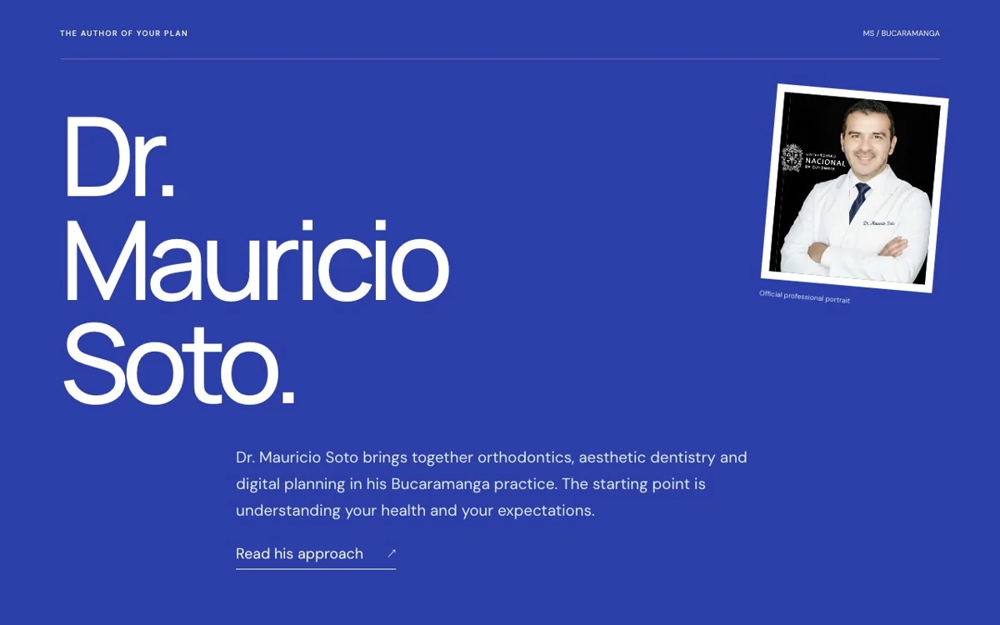
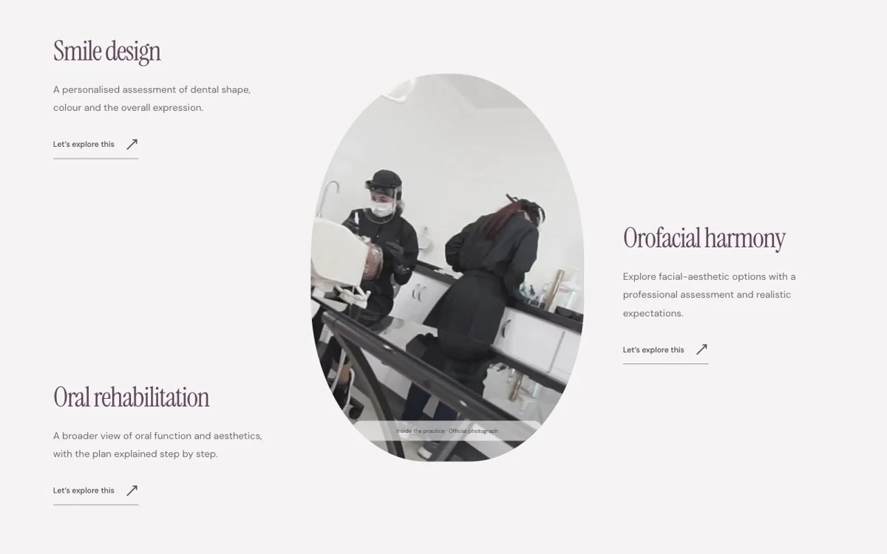
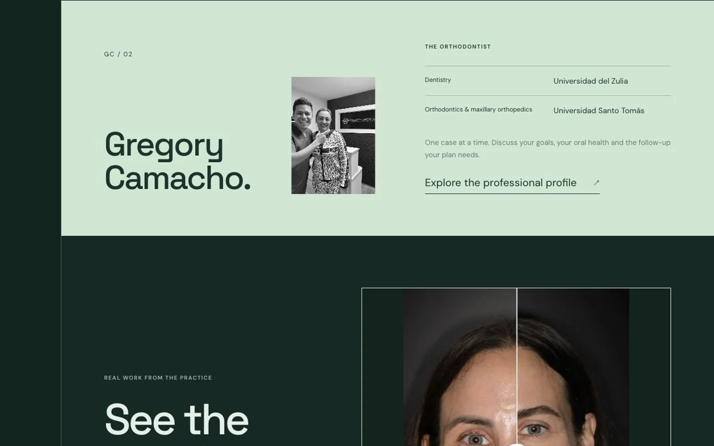
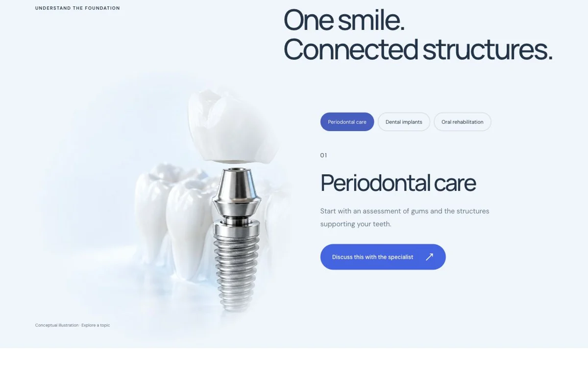
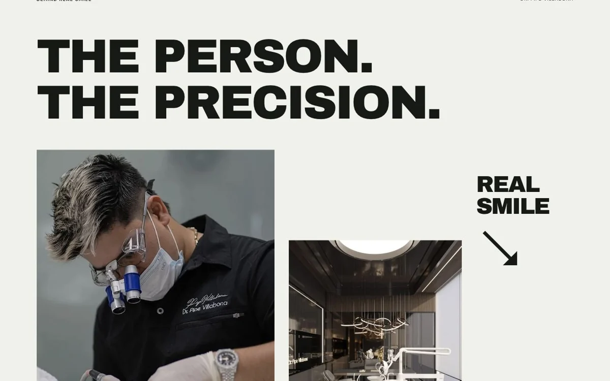
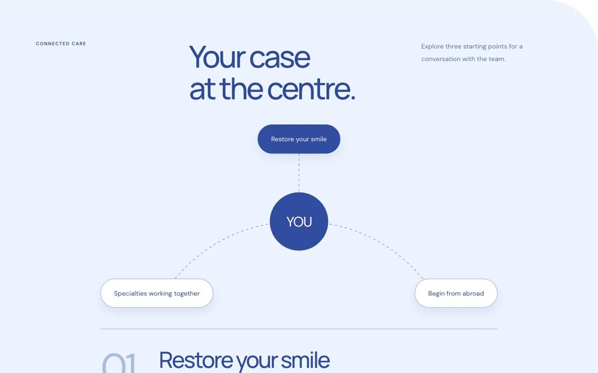
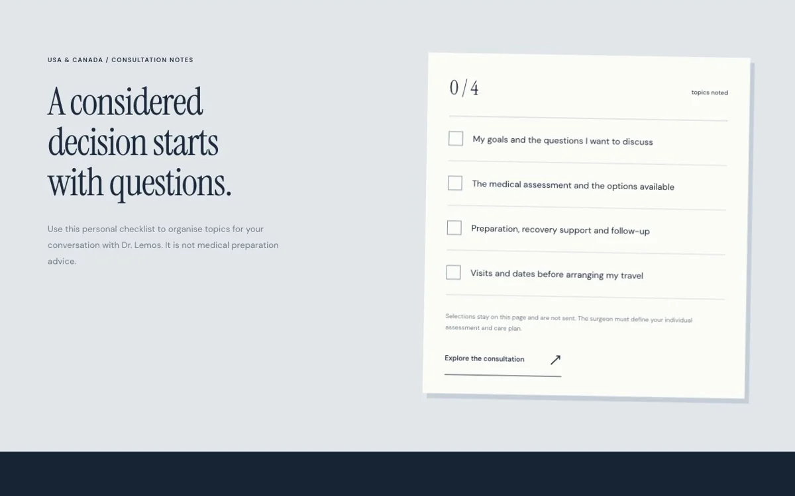
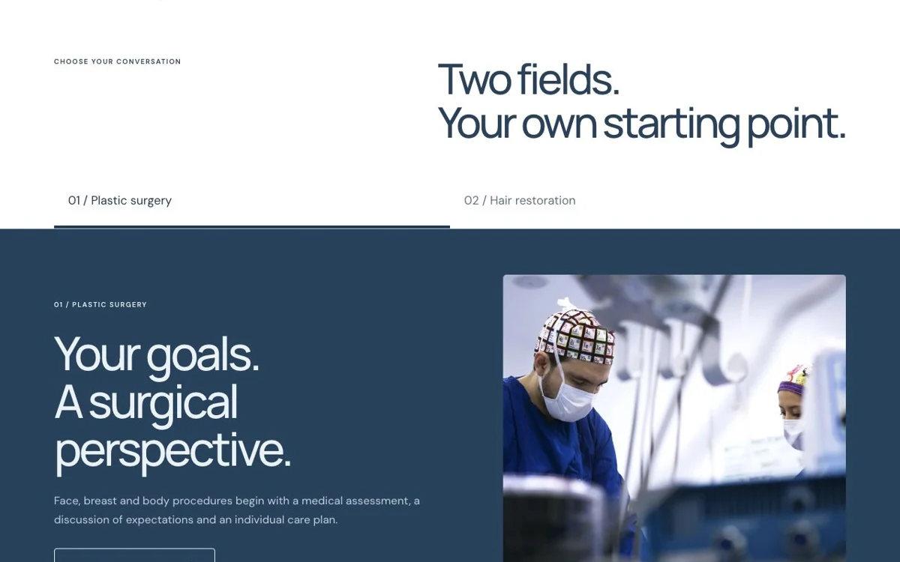

01Odontología digital
Dr. Mauricio Soto
Carillas y planeación digital: captar búsquedas específicas y acompañar cada valoración.
Abrir propuesta comercial ↗Ocho propuestas para conectar a profesionales de Bucaramanga y su área metropolitana con pacientes en USA y Canadá.
8 propuestas individuales · Nuevos interiores · Sin preciosContenido y embudos por especialidad.
CRM, agenda y responsables claros.
Agentes IA, seguimiento y referidos.

Carillas y planeación digital: captar búsquedas específicas y acompañar cada valoración.
Abrir propuesta comercial ↗
Dos recorridos de interés, una coordinación: sonrisa y armonización orofacial.
Abrir propuesta comercial ↗
Convertir el interés internacional en una valoración y un plan de continuidad.
Abrir propuesta comercial ↗
Explicar tratamientos por etapas y coordinar decisiones de rehabilitación compleja.
Abrir propuesta comercial ↗
Conectar adquisición, consulta virtual y coordinación del viaje para Real Smile.
Abrir propuesta comercial ↗
Unificar recepción, especialistas y seguimiento del paciente que vive en el exterior.
Abrir propuesta comercial ↗
Dar protagonismo al criterio del cirujano y organizar valoración, preparación y seguimiento.
Abrir propuesta comercial ↗
Dos embudos diferenciados, con coordinación internacional y responsables por etapa.
Abrir propuesta comercial ↗Cada propuesta incluye una oportunidad de crecimiento, un pipeline, funciones administrativas de IA, ideas de contenido y un piloto para validar antes de ampliar.
Conceptos comerciales independientes, basados en información pública. No implican una relación comercial con los profesionales ni prometen resultados. La agenda y los asistentes de las webs son demostraciones.